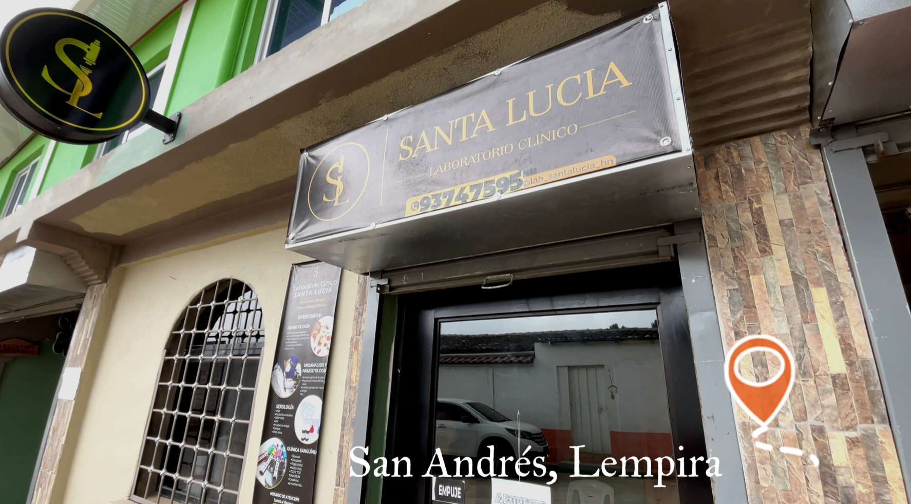
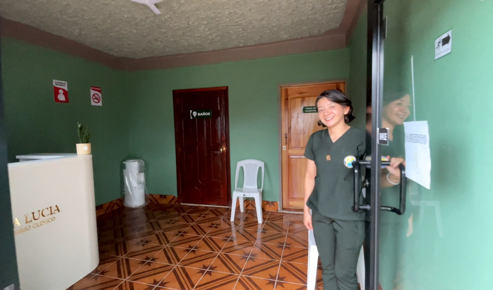
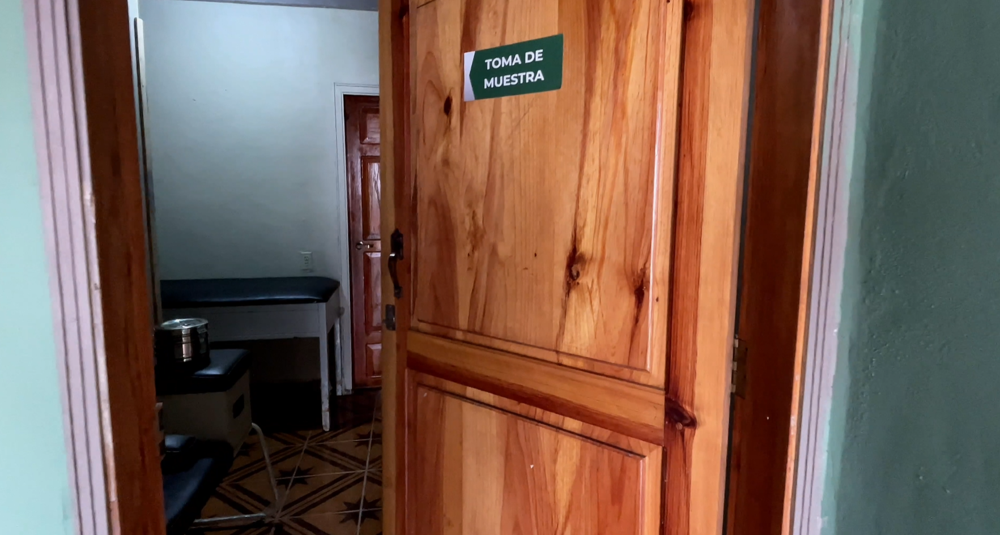
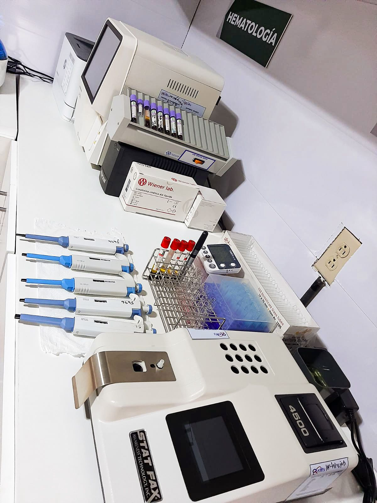

Galería de Fotos
Conoce nuestras instalaciones, áreas de atención, espacios de trabajo y parte del ambiente profesional con el que brindamos nuestros servicios.
Ver galeríaNuestras instalaciones
En esta sección presentamos una muestra visual de las áreas más importantes del laboratorio, incluyendo espacios de recepción, procesamiento, atención y zonas de análisis clínico.
Portafolio fotográfico
Estas imágenes representan diferentes áreas del laboratorio clínico. Más adelante puedes reemplazarlas por las fotografías reales de tu proyecto.

Ubicación
San Andrés, Lempira.

Área de espera
Zona cómoda y segura para pacientes y acompañantes mientras esperan atención.

Toma de muestras
Espacio preparado para realizar procedimientos de forma ordenada y profesional.

Equipos especializados
Herramientas y equipos utilizados para obtener resultados confiables y precisos.

Procesamiento de muestras
Área en la que se lleva a cabo el manejo y análisis de distintas muestras clínicas.

Instalaciones modernas
Vista general de espacios acondicionados para el trabajo clínico y la atención segura.
Visita Nuestro Centro
Te invitamos a conocer nuestras instalaciones y el ambiente profesional en el que desarrollamos nuestros servicios clínicos y de atención al paciente.
Instalaciones Modernas
Contamos con espacios organizados y funcionales, diseñados para brindar comodidad, orden y una atención adecuada a cada paciente.
Equipo Actualizado
Nuestro laboratorio dispone de recursos y herramientas que apoyan la realización de estudios clínicos con precisión y confianza.
Comodidad del Paciente
Procuramos ofrecer una atención en un ambiente agradable, limpio y seguro, pensado para el bienestar de quienes nos visitan.
Calidad en el Servicio
Trabajamos con responsabilidad y compromiso para ofrecer una atención seria, ordenada y enfocada en las necesidades de cada persona.